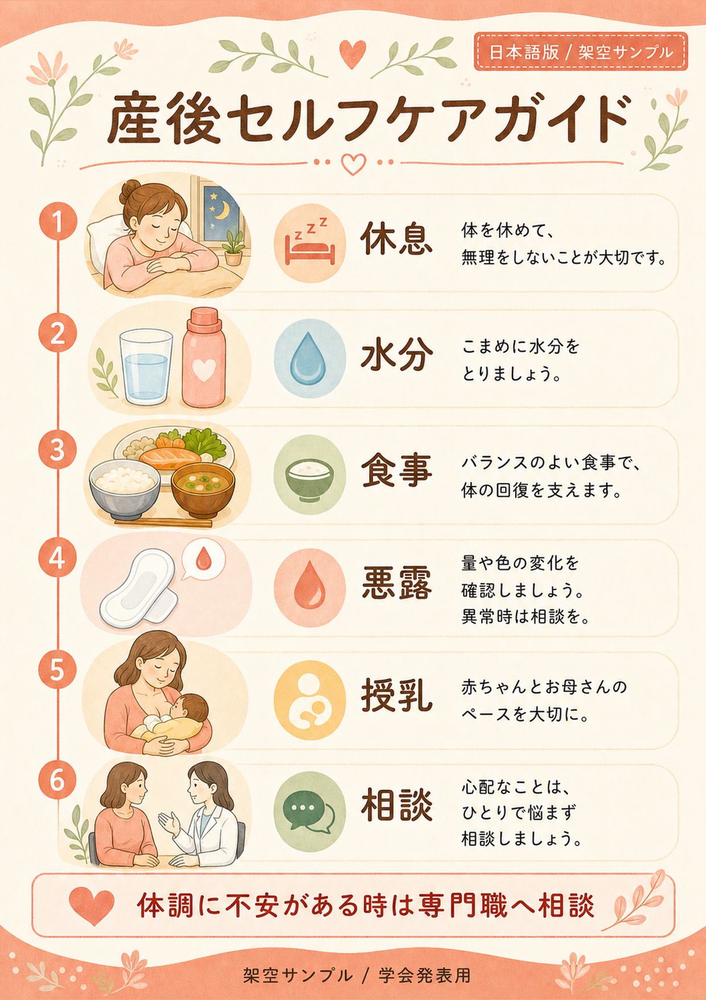
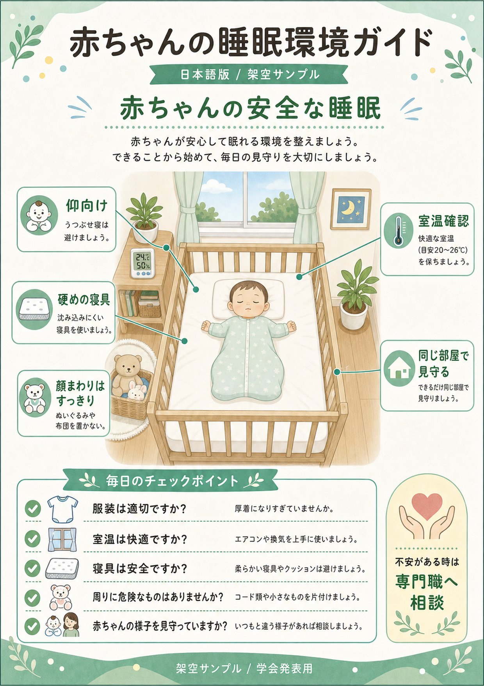

産後の生活
産後セルフケアガイド
休息、水分、食事、悪露、授乳、相談先を順番に確認できる資料です。産後退院時や産後ケア利用時の説明に使いやすい構成です。
Resource Examples
退院時説明、産後ケア、授乳相談、両親学級など、場面に合わせて必要な内容を読みやすく整理します。

休息、水分、食事、悪露、授乳、相談先を順番に確認できる資料です。産後退院時や産後ケア利用時の説明に使いやすい構成です。

寝具、室温、仰向け、見守りなどを、イラストとチェック項目で確認できる資料です。家族が自宅で見返しやすい一枚資料に向いています。

赤ちゃんのサイン、抱き方、くわえ方、痛みの確認、相談先を段階的に示す資料です。母乳育児支援や授乳相談の導入に使えます。

家族ができる支援、家事分担、母親の休息、専門職につなぐ視点を整理する資料です。父親・家族向け説明や両親学級の補助資料に向いています。
Use Cases
同じ内容でも、渡す相手、説明時間、紙面サイズによって、情報量と表現のやわらかさを調整します。
短時間で伝える内容を絞り、持ち帰って見返せる資料として整理します。
授乳、睡眠、産後の体調など、相談内容に合わせて必要な情報を見やすくまとめます。
家族で共有したい内容を、説明用スライドや配布資料として使える形に整えます。
Contact
母子保健・看護教育領域の資料作成、AI活用研修、ワークフロー設計について相談できます。